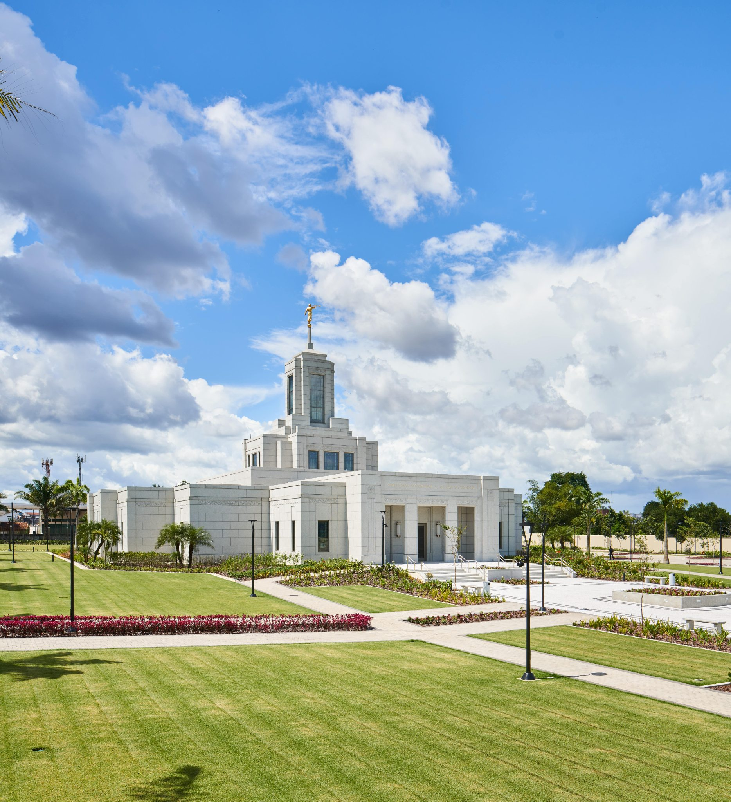

Belém, Pará, Brasil

Sobre o Templo
Este templo fica em Belém, no estado do Pará, Brasil. A fotografia mostra seus jardins e a arquitetura clara sob o céu amazônico.
Informações para Visitação
- Localização: Belém, Pará, Brasil
- Horários e visitação: consulte os canais oficiais da Igreja